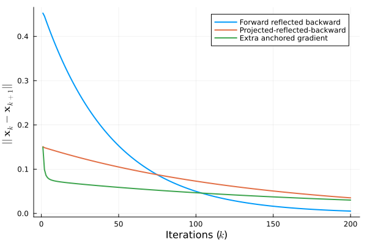

Feasibility problem
Let us consider $M$ balls in $\mathbb{R}^n$, where the $i$-th ball of radius $r_i > 0$ centered in $\mathbf{c}_i \in \mathbb{R}^n$ is given by $\mathcal{B}_i(\mathbf{c}_i, r_i) \subset \mathbb{R}^n$. We are interested in finding a point belonging to their intersection, i.e., we want to solve the following
\[\begin{equation} \text{find} \ \mathbf{x} \ \text{subject to} \ \mathbf{x} \in \bigcap_{i = 1}^M \mathcal{B}_i(\mathbf{c}_i, r_i) \end{equation}\]
It is straightforward to verify that the projection of a point onto $\mathcal{B}_i(\mathbf{c}_i,r_i)$ is evaluated as
\[\begin{equation} \mathbf{P}_i(\mathbf{x}) := \text{proj}_{\mathcal{B}_i(\mathbf{c}_i,r_i)}(\mathbf{x}) = \begin{cases} \displaystyle r_i\frac{\mathbf{x} - \mathbf{c}_i}{\|\mathbf{x} - \mathbf{c}_i\|} & \text{if} \ \|\mathbf{x} - \mathbf{c}_i\| > r_i \\ \mathbf{x} & \text{otherwise} \end{cases} \end{equation}\]
Due to the non-expansiveness of the projection in $(2)$, one can find a solution for $(1)$ as the fixed point of the following iterate
\[\begin{equation} \mathbf{x}_{k+1} = \mathbf{T}(\mathbf{x}_k) = \frac{1}{M}\sum_{i = 1}^M\mathbf{P}_i(\mathbf{x}_k) \end{equation}\]
which result from the well-known Krasnoselskii-Mann iterate. By letting $\mathbf{F} = \mathbf{I} - \mathbf{T}$, where $\mathbf{I}$ denotes the identity operator, the fixed point for $(3)$ can be treated as the canonical VI [1].
Let's start by creating the problems' data.
using Random, LinearAlgebra
using Monviso, Distributions, JuMP, Clarabel
Random.seed!(2024)
# Problem data
n, M = 10, 50
centers = rand(Normal(0, 100), (n, M))
radii = rand(Normal(30, 100), M) .|> absThen, let's create the projection operator $\mathbf{P}(\cdot)$ and the VI mapping $\mathbf{F}(\cdot)$.
P(x) = let ds = x .- centers, ms = map(norm, eachcol(x .- centers))
reduce(hcat, [m > r ? r .* d ./ m : x for (m, d, r) in zip(ms, eachcol(ds), radii)])
end
T(x) = mean(P(x), dims=2)
F(x) = x .- T(x)Finally, let's instantiate the model and the VI. Note that $\mathcal{X} = \mathbb{R}^n$, so the proximal operator is the identity itself.
model = Model(Clarabel.Optimizer)
set_silent(model)
y = @variable(model, [1:n])
vi = VI(F; y=y, model=model)The projection $\mathbf{P}(\cdot)$ is merely monotone, so $\mathbf{F}(\cdot)$ is merely monotone as well. As examples, we can use the forward-reflected-backward (Monviso.frb), the projected reflected gradient (Monviso.prg), and the extra anchored gradient (Monviso.eag).
max_iter = 200
step_size = 0.01
residuals = (
frb = Vector{Float32}(undef, max_iter),
prg = Vector{Float32}(undef, max_iter),
eag = Vector{Float32}(undef, max_iter)
)
# Initial solution and iterative process
x0 = rand(n)
let sol_frb = (xk = x0, x1k = x0)
sol_prg = (xk = x0, x1k = x0)
sol_eag = (xk = x0,)
for k in 1:max_iter
# Forward-reflected-backward
xk1_frb = frb(vi, sol_frb..., step_size)
residuals.frb[k] = norm(xk1_frb .- sol_frb.xk)
sol_frb = (xk = xk1_frb, x1k = sol_frb.xk)
# Projected reflected gradient
xk1_prg = prg(vi, sol_prg..., step_size)
residuals.prg[k] = norm(xk1_prg .- sol_prg.xk)
sol_prg = (xk = xk1_prg, x1k = sol_prg.xk)
# Extra anchored gradient
xk1_eag = eag(vi, sol_eag..., x0, k, step_size)
residuals.eag[k] = norm(xk1_eag .- sol_eag.xk)
sol_eag = (xk = xk1_eag,)
end
endThe API docs have some detail on the convention for naming iterative steps. Let's check out the residuals for each method.
using Plots, LaTeXStrings
plot(
1:max_iter, [residuals.frb, residuals.prg, residuals.eag];
xlabel=L"Iterations ($k$)",
ylabel=L"$||\mathbf{x}_k - \mathbf{x}_{k+1}||$",
labels=[
"Forward reflected backward"
"Projected-reflected-backward"
"Extra anchored gradient"
] |> permutedims,
linewidth=2
)